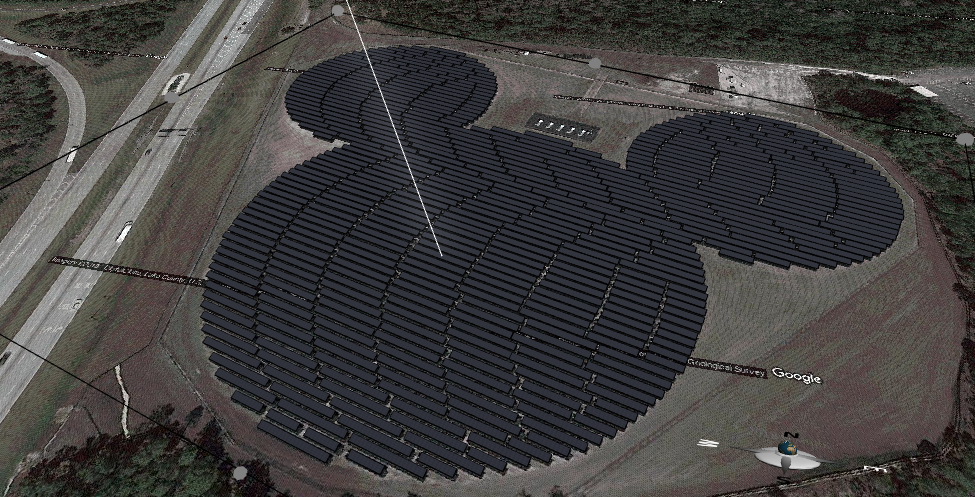
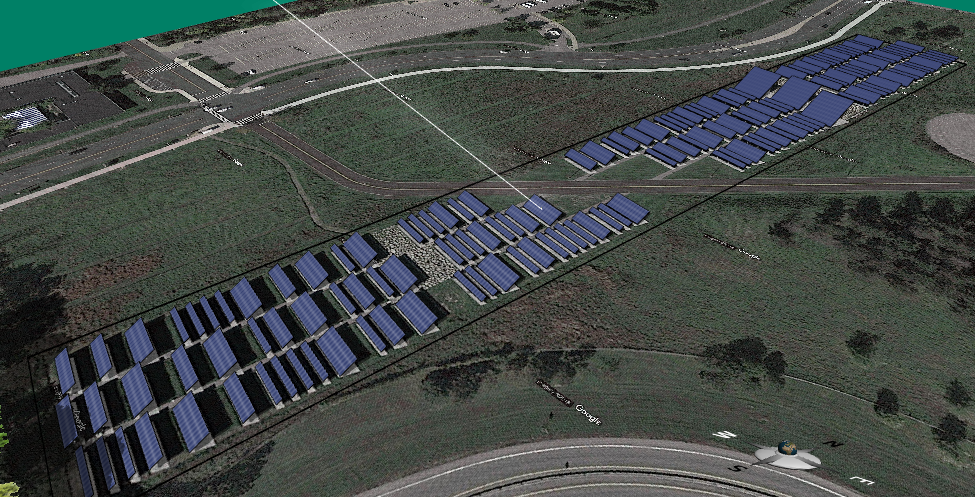
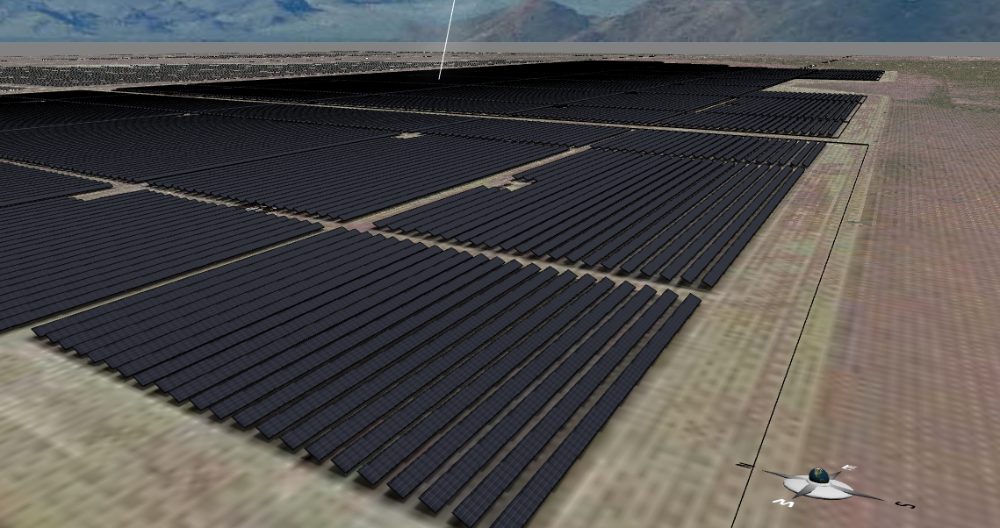
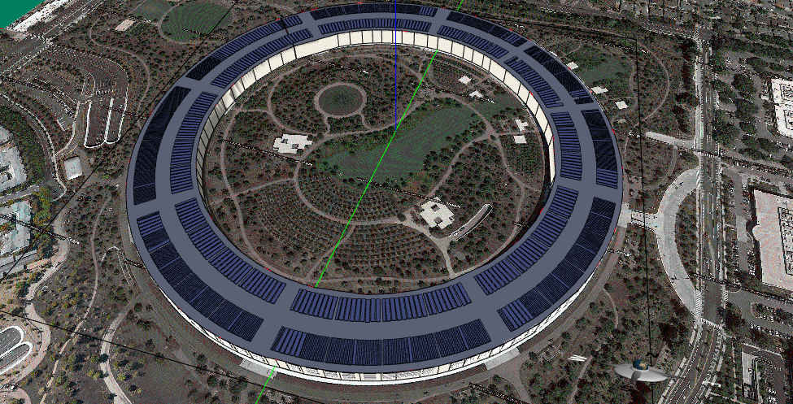
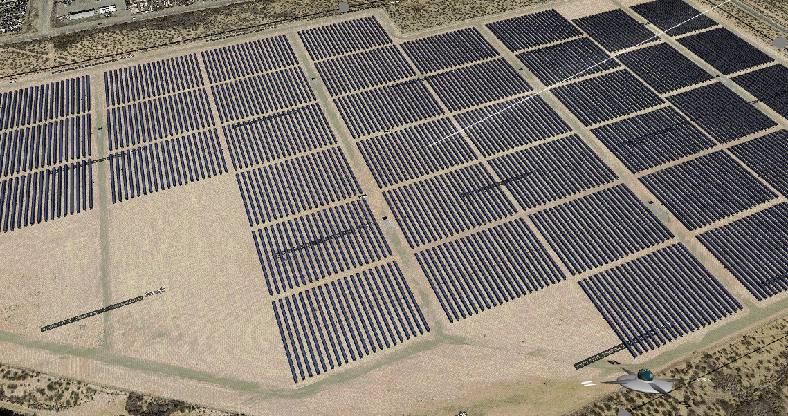
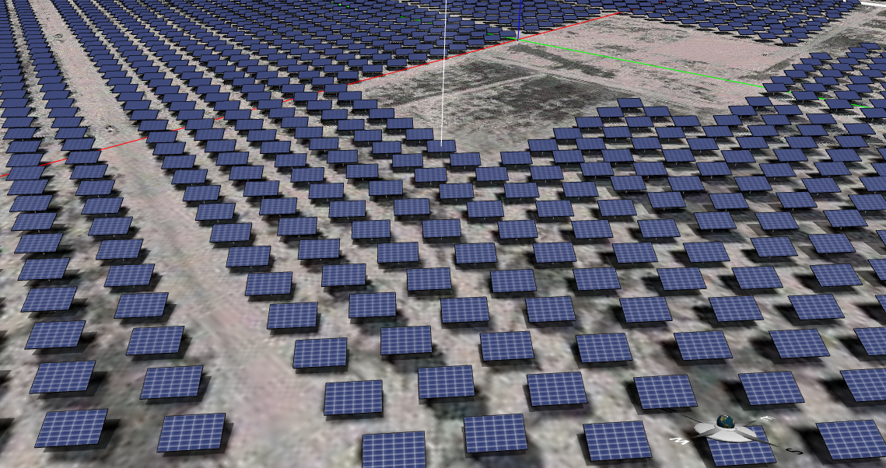

Aladdin
Photovoltaic Solar Power
A gallery of photovoltaic (PV) design possibilities in Aladdin — from shaped arrays to utility-scale farms.
← Back to Aladdin
A video overview of PV solar power in Aladdin.
Mickey Mouse Solar Farm, Florida.
The Solar Strand, University at Buffalo, New York.
Topaz Solar Farm, California (fixed arrays).
Apple Headquarters, California (Download model).
TEP Solar Farm, Arizona (single-axis trackers) (Download model).
OCI Solar Power Alamo 6 Solar Farm, Texas (dual-axis trackers) (Download model).
← Back to Aladdin
The following examples demonstrate various design possibilities of photovolatic (PV) solar power supported in Aladdin.





